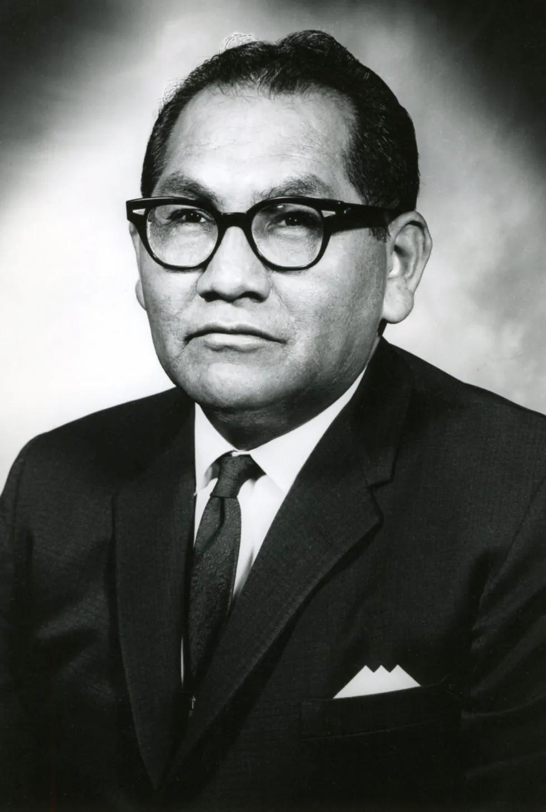
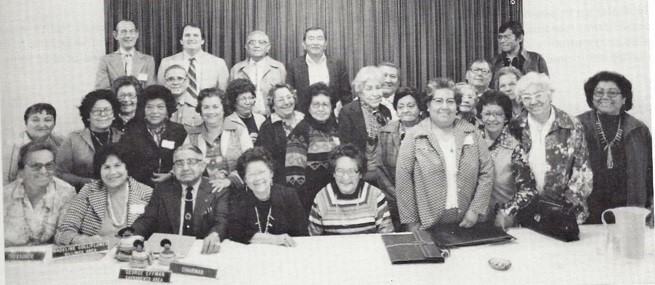
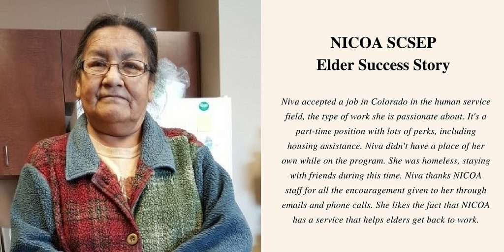

Wendell Chino
Founder

National Tribal Charman's Association
Organizors

Founder
Organizors
NICOA advocates for American Indian and Alaska Native elders, mainly focusing on their economic well being with NICOA's SCSEP program. AI/AN elders are disproportionatly low in nearly every social, health and economic factor with the highest poverty rates at 24.1%, while the national average is 12.8% and AI/AN elders are also 50.3% more likely to have a disablity NICOA serves AI/AN elders in 7 states with their SCSEP program: Arizona, Minnesota, New Mexico, North Dakota, South Dakota, Oklahoma, and Wisconsin. NICOA's yearly conferences that advocate for elders that are struggling socially, financially, and physically reach over 300,000 AI/AN elders and allow these disadvantaged people to gain access to necessary resources to help them.
Participants in NICOA's SCSEP program must be 55+, low income (125% of poverty line or less) and un employed. After applying, AI/AN elders are given part time jobs in a variety of skills such as teaching, cooking, and clerical fields and/or training in modern day skills that they may be lacking. Priority is given to the elders that are veterns, 65+, have low literacy skills, live in a rural area, are disabled, or are homeless or at risk of homelessness.
